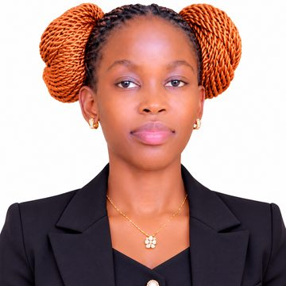
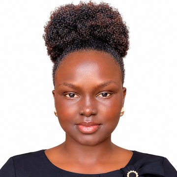

Esther Isai Oromo Saturlino
Logic and interaction
Computer Science student who enjoys making pages respond to people.
CSC 216 · Lab 2
We are Computer Science students turning what we learn in class into small, clear and accessible websites.
See our projects
Logic and interaction
Computer Science student who enjoys making pages respond to people.

Structure and design
Computer Science student who enjoys turning rough ideas into clean, accessible layouts.